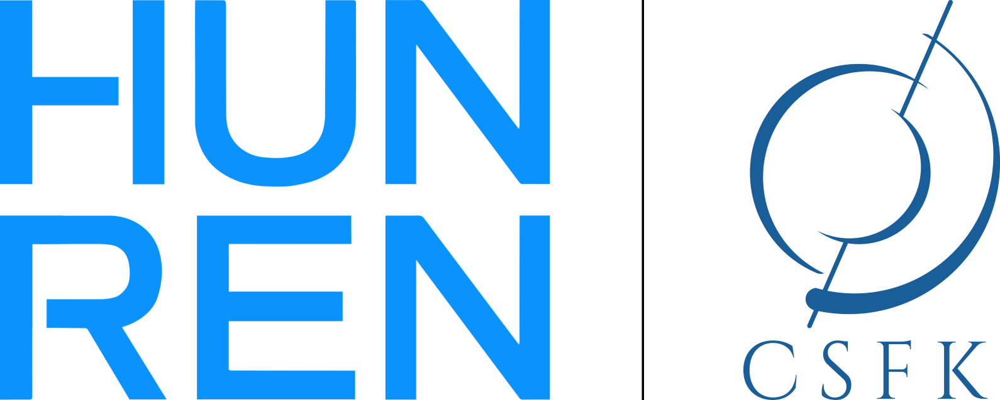
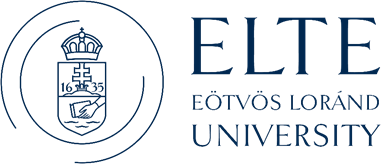
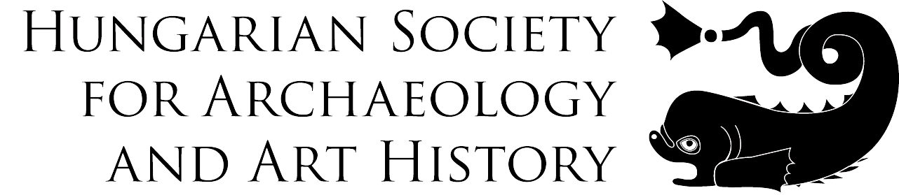

Young Researchers in Archaeometry 2025
April 1st – Abstract submission opens
May 31st – Deadline for abstract submission
July 1st – Announcement of abstracts decisions
July 1st – Registration opens
Aug 1st – Preliminary program available
Sept 15th – Registration closes
Oct. 1st – Meeting details and final program available
Oct. 14th–17th – YRA2025 in Budapest
Oct. 31st – Certificates sent to participants
Jan. 31st – Submission deadline for the Proceedings.
General information
Organised by:

Hosted at: 
Sponsored by:

Subcommittee on Archaeometry, Hungarian Academy of Sciences
Supported by: 
Organised by:
Viktória Mozgai
Rebeka Gergácz
Andrea Mészáros
Eszter Solnay
Enikő Somogyvári-Lajtár
Thomas Rose
We are happy to announce that the 8th Workshop Young Researchers in Archaeometry will be held at the Eötvös Loránd University, in Budapest, Hungary. The conference will be held in person from October 14th to 17th, 2025 and will welcome early career researchers (masters, PhD, post-docs up to six years after their PhD) in archaeological sciences and cultural heritage studies.
With this workshop, we aim to offer a relaxed atmosphere to encourage interdisciplinary exchange between early career researchers. We are pleased to invite you for oral and poster contributions in all fields of natural sciences about archaeological and anthropological topics. In particular, early career researchers in archaeology, art history, anthropology, biological anthropology, environmental archaeology, chemistry, conservation, cultural heritage, earth science, and material science are welcome to submit an abstract for an oral presentation or poster.
Participation will come at a cost but we do our best to keep the fee as low as possible. In the last years, YRA managed to keep workshop fees well below 50 €.
Abstract submission
Send us your abstract (max. 250 words) until May 31st, 2025 via the submission form.
SAS Travel Award
The Society for Archaeological Sciences (SAS) sponsors a single travel award of USD 250 to support one student/ECR from low and middle income countries and/or with financial need.
The application for the SAS Travel award is integrated in the abstract submission form. Applications will be evaluated after abstract submission closed. The evaluation will be based on the applicant’s career status, location of affiliation, availability of alternative funding sources, and an motivation letter of 200 to 250 words. The SAS Travel Award will only be bestowed to an applicant with an abstract accepted for presentation at YRA2025.
Proceedings
YRA2025 teamed up with the editorial board of Archeometriai Műhely to publish the workshop proceedings as full-length peer-reviewed articles. Archeometriai Műhely is a diamond open access journal, meaning that publication and access to its articles are free of charge. More information will follow soon. Submission deadline for the proceedings is 31st January 2026.